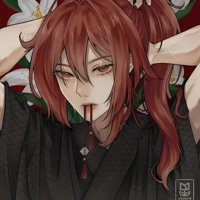

VIOLET
KYOREN
Uma musicista de 20 anos arrancada de 2025 e lançada mais de mil anos no futuro após uma frequência sonora distorcer a própria realidade.

QUEM É VIOLET?
VIOLET KYOREN
Violet é uma exploradora e combatente da E.U.P. que encontrou uma nova vida após atravessar mais de mil anos em um único acontecimento.
IMPULSO. MÚSICA. CURIOSIDADE.
Violet sempre carregou uma inquietação difícil de explicar. Desde pequena parecia existir alguma coisa além do mundo que conhecia, uma sensação de que havia algo esperando para ser descoberto. A música acabou se tornando a forma mais natural de expressar isso.
Ao lado de Safira, sua irmã, encontrou na banda ahlevO um espaço para transformar essa inquietação em som. O que começou como música acabou se tornando a chave para um fenômeno que nenhuma das duas poderia compreender.
LINHA TEMPORAL
O começo
Violet nasce em uma versão alternativa da Terra. Um mundo aparentemente comum, onde nada parecia indicar o caminho que sua vida tomaria.
Algo estava errado
Aparelhos eletrônicos falhavam perto de Violet, rádios captavam frequências estranhas e sonhos recorrentes mostravam lugares que ela nunca havia conhecido.
A base de tudo
Violet escolhe o baixo e começa a tocar ao lado de Safira. A música passa a ser mais do que um hobby: torna-se a maneira das duas expressarem aquilo que não conseguiam explicar.
Uma nova frequência
Guizo assume a bateria e Lyra os vocais. A ahlevO ganha forma, identidade e começa a se apresentar em diferentes lugares.
A frequência
Uma frequência específica começa a aparecer repetidamente nos equipamentos da banda. Violet percebe que aquilo não é um ruído comum e começa a investigar.
O deslocamento
Violet e Safira tentam reproduzir a frequência. O som distorce o ambiente, o espaço parece comprimido e a realidade simplesmente deixa de funcionar como deveria.
Destino: 3017Um novo mundo
As duas são encontradas por equipes da E.U.P., uma estação responsável por fenômenos anômalos, deslocamentos inexplicáveis e rotas interplanetárias instáveis.
Looteadora Noturna
Depois de meses sendo estudadas, Violet e Safira escolhem deixar de ser apenas observadas. Agora participam de expedições em planetas desconhecidos, regiões instáveis e lugares onde a realidade nem sempre se comporta como deveria.
STATUS
ATRIBUTOS
PERÍCIAS
EQUIPAMENTOS
KATANA
3d8 + 2
+5MACHADO
7d6 + 2
+3 // +5 HPM14
3d12 + 2
+3BLACK ARMOR
RD
7COLETE + JAQUETONA
RD
5ANEL DE AFINIDADE 2
BÔNUS DE DANO
+2INVENTÁRIO
RELAÇÕES
SAFIRA KYOREN
Safira é o contraponto perfeito de Violet. Enquanto Violet age pelo impulso e pela curiosidade, Safira representa precisão, controle e estratégia.
As duas cresceram juntas, formaram a ahlevO e atravessaram a mesma frequência que mudou suas vidas para sempre.
O SOM QUE ABRIU O CAMINHO
Guizo, Lyra, Violet e Safira formaram a ahlevO. O que começou como uma banda acabou se tornando o centro de um dos maiores fenômenos anômalos conhecidos pela E.U.P.
PLAYLIST
Registros musicais associados ao período anterior ao deslocamento temporal.
O PASSADO
FICOU PARA TRÁS.
Mas Violet continua andando.